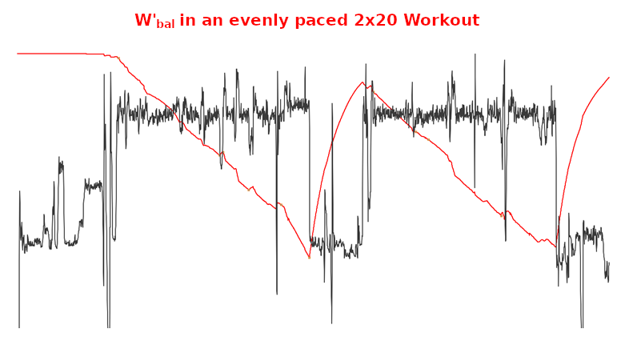

GoldenCheetah
- Downloads or Imports ride data directly from many devices
- Imports ride data downloaded with other programs
- Provides a rich set of analysis tools
- Is available for Linux, Mac OS X, and Windows.
- Is released under an Open Source license.
We are proud to announce that GoldenCheetah v3.1 was released.
Installation is simple. Download the file for your operating system.
You can also view the release notes for 3.1
There is a User guide and a FAQ that you can use to help you use the program.
Golden Cheetah downloads data from all versions of the PowerTap computer including the new Joule GPS. Previously you needed to have the FTDI USB Drivers installed if you were using the PowerTap USB cradle (as opposed to the older, serial cable). This should not be necessary. If you are having problems then you can manually install the FTDI USB driver.
On Windows, Linux and Mac OS X, Golden Cheetah also downloads from the SRM PCV. On Mac OS X, you'll need to install the open source PL2303 driver to download from an SRM. Please see the WIKI article - PCV on Mac OS X for further information.
There is the older Version 2.1.0 User's Guide on how to install and use Golden Cheetah that can assist also.
Gareth Coco has also made regular development builds available. These binaries are based on the latest source code, so they may have more features and less (but sometime more) bugs than the stable release above.
The Golden Cheetah source code is available via git. See the Developer's Guide for more information. You can also browse the source on github.
Multiple charts to examine and analyse ride and interval data including:
Track performance and physiological markers for over 130 metrics, user-definable best durations, model estimates:
Sean Rhea bought a PowerTap Pro on April 20, 2006 and immediately set
to figuring out how to use it from his Mac without using Virtual PC.
With help from Russ Cox and David Easter, he wrote two command-line
programs for downloading data from a PowerTap and interpreting that
data. Sean released these two tools, ptdl and
ptunpk, on May 4, 2006.
Later that year, Sean needed to learn QT for his real job, and he set about writing a graphical version of his software for practice. He released the first graphical version on September 6, 2006, changing the name to GoldenCheetah in reference to an old legend from his days as a runner.
Since then, a large community has contributed additional code and other support, including:
Wherever possible we choose to use published science. Science that has been developed with the academic rigour demanded by the scientific method; evidence based, peer-reviewed and original. This means we are able to provide the best analysis available, but at the cost of a steep learning curve for new users. So below, we try to introduce some of the most important concepts, why they are important and how they might help you to improve.
How hard can you go, in watts, for half an hour is going to be very different to how hard you can go for say, 20 seconds. Then thinking about how hard you can go for a very long time will be different again. When it comes to reviewing and tracking changes in your performance and planning future workouts you quickly realise how useful it is to have a good understanding of your own limits.
In 1965 two scientists Monod and Scherrer presented a ‘Critical Power Model’ where the Critical Power of a muscle is defined as ‘the maximum rate of work that it can keep up for a very long time without fatigue’. They also proposed an ‘energy store’ (later to be termed W’) that represented a finite amount of work that could be done above that Critical Power.
In cycling parlance W’ would be referred to as the matchbook– the harder you go the quicker it will be used up, but temper your efforts and you can ‘save a match’ for the last sprint. CP, on the other hand, is that intensity (or power output) where you are uncomfortable but stable, akin to your TT pace. You know that if you try to go any harder you are gonna blow up pretty quickly.
Monod and Scherrer also provided a mathematical formula to estimate the maximum power you can go for any given duration using W’ and CP as parameters. This formula is pretty reliable for durations between 2 minutes and an hour or so, but less reliable for shorter and longer durations. So, over the last 50 years, variations of these models have been developed to address this, and it still continues to be a topic of great scientific interest.
We have implemented some of these models so you can get power estimates to predict and review your training and racing. We have also implemented a wholly new model called the ‘Extended CP model’ that is based upon bioenergetics.
We use complex sources of overlapping energy when we exercise. These energy sources are anaerobic with a limited capacity and a high rate limit (like W’) and aerobic with an unlimited capacity but a low rate limit (like CP).
In the first 10 seconds or so of high output work we draw upon energy stored within the muscles that have immediate availability – so we can sprint all out for 10-30 seconds without drawing breath and at very high work rates. These chemicals are phosphates called ATP (adenosine triphosphate) and PCr (phosphorcreatine). Interestingly, after about 3 minutes of total rest these stores are largely replenished.
So for the next 50 seconds or so after those phosphates are depleted we primarily get our energy from glycolysis and still without drawing breath. This is the conversion of glucose into lactate. It takes us about 1 hr to recover and remove all the lactate produced, but most of it is gone after about 10 minutes – and we can speed up this clearance through light exercise – which is why a warm-down is a good idea after intense exercise.
But now, sadly, after that all-out minute we are going to have to draw breath, because we need the oxygen to power the aerobic energy systems. First up we get aerobic glycolysis, this is converting glucose into pyruvate by burning it with oxygen in a really complicated 10 stage cycle. The conversion rate is limited by the amount of oxygen the lungs can absorb (VO2max) and the available fuels. It can take anywhere between 1-3 minutes to get up to ‘peak’ production and then dies away slowly over time. Once all the glucose is gone, we will bonk, which is why gels and powders are high in easily digested glucose – to refuel this process. Lastly, from about 6-7 minutes we start to rely upon lipolysis that utilises an almost limitless source of energy; fat and water. So stay hydrated !
Our Extended Power Duration Model extracts the likely contribution of these energy systems to predict the energy production (or watts per second). This is akin to reading the fuel gauge to work out how fast you’re going in a car. It’s not an exact science and so yields an approximated answer, which can be slightly overestimated because it doesn’t really consider why we fatigue.
It is likely that in the next 2-3 years current research will help to explain muscular, neural and psychological fatigue or constraints. These in turn can be used to refine our models. Research is also likely to expand our understanding of W’ and CP and how they reflect underlying physiology and associated dynamics (maybe even CP fluctuates depending upon how we ride).
Roughly 40% of your body weight is muscle; skeletal muscle that’s attached to your bones via tendons and are controlled via conscious thought (“shut up legs, pedal faster”), but also smooth muscle including arteries, the bladder, eye and reproductive organs and of course cardiac muscle pumping blood 24x7 and again without any conscious thought.
We’re going to focus on skeletal muscle. Our legs contain lots of different muscle groups; the quadriceps, hamstrings, calves etc. These muscle groups work together when we walk, run, kick and jump. Each muscle group in turn is comprised of a large number of motor units (MU) that in turn contain a motor neuron and a collection of muscle fibres. Our brain triggers a muscle group into action by recruiting as many of its motor units as needed to meet the force we want. It does this by firing the motor neurons that sends an electrical pulse to the muscle fibres causing them to contract.
The force that a muscle fibre contracts is known as twitchiness; we have type I known as slow-twitch fibres that don’t contract with much force but can keep doing it for a long time and a type II also known as fast-twitch that can be very powerful, but fatigue much more quickly. In healthy adults the distribution of type I/II differs significantly by muscle group and also to a lesser extent upon your genetics.
Slow-twitch fibres contain a high number of mitochondria; often referred to as cellular power-plants. They 'generate' energy on demand in that complex 10-step process mentioned above (its actually called The Krebs Cycle). In contrast, fast-twitch muscles contain far fewer mitochondria and instead have greater stores of glycogen and the enzymes needed to to produce energy without oxygen.
As a result, slow-twitch muscles are fuelled primarily from fat at endurance intensities, but will utilise glycogen at tempo and higher intensities. Fast-twitch have two types; IIa that are fuelled primarily from glycogen but can utilise fat and IIx/d that are the most powerful but only use glycogen.
With the right kind of training it is possible to 'convert' type IIa to type I which improves aerobic endurance performance but at the cost of a loss of some strength. This is typically achieved through lots of hours riding at a lower intensity, below LT1. Explosive and high intensity workouts will typically signal greater type II muscle fibre growth. A typical basal distribution of fibre types would be in the range 55% I, 32% IIa, 11% IIx and 2% IId.
As we increase the power we want to generate our brains will recruit more and more of the motor units to meet the demand. As the demand gets higher we reach a point where all motor units available will be firing. When fresh and all motor units are available we will hit our P-max power, but if we’re fatigued some of those muscles will be exhausted and unavailable – and our maximum power will be reduced. This peripheral fatigue occurs much earlier for fast-twitch than slow-twitch muscles. So our brain will always recruit from slow-twitch before fast-twitch muscles to meet demand – so the fast twitchers are saved for when we really need them.
Aside from fatigue within the muscle fibres, our brains and neurons will also limit what we can achieve; in some cases this keeps us well within our natural capabilities, perhaps as a ‘safety mechanism’. And there is lots of research being done into this central fatigue to see how if differs by individual and how much it can be changed with training and the right ‘motivation’.
Lactate is a double edged sword; on the one hand it is the primary source of 30% of the glucose we generate within the body, but on the other hand it also regulates metabolism — a safety mechanism within the body.
Lactate is produced when we burn glucose aerobically. It is not a waste product as was widely believed in the past; it inhibits fat oxidation and also glucose utilisation within our muscle cells — it even reduces muscle shortening and thus peak power. It is a 'brake' to stop us going too hard, helping us to pace for the long run. But of course, we might not want that to happen if we're winding it up for the finish straight !
Further, the mitochondria within our slow-twitch fibres and in fact most of our bodily organs can utilise lactate to create glucose. So our body creates it to regulate our metabolism, but when we settle down it burns it for fuel.
Lactate is always produced even at lower intensities of exercise. Initially our blood flow will clear lactate away as it is produced to the liver, heart, kidneys where it is slowly converted and stored as fuel for re-use. Additionally whilst we are working at these lower intensities some of the lactate produced is converted back into glucose within the muscles themselves (which also helps to clear lactate when we rest or "lift off the gas for a moment"). The reason this only occurs at lower intensity is because it is the slow-twitch muscle fibres that contain a transporter called MCT-1 that controls lactate re-use within the fibre mitochondria. And slow-twitch muscles will all be busy when we exercise at higher intensities.
As we work a little harder lactate will be created a bit faster, but at the same time blood flow increases our heartrate goes up so we keep clearing it. But eventually we get to a point where lactate levels increase above the baseline (typically 1mmol above), this point is known as “LT1”. At this point we will feel that we are working, but no more than a tempo pace. As we continue to go harder, blood lactate accumulation will increase and so will blood flow as our heart rate rises. Performance at the LT1 point has been shown to be an excellent predictor of performance in endurance races like the marathon or a cycle race lasting two or more hours.
We will eventually get to a tipping point where clearance and accumulation will be at a maximum point we can sustain; this is the intensity that best relates to a TT pace and is called “LT2” or the lactate turnpoint (LTP) and more technically referred as the maximal lactate steady state (MLSS).
The power output at this point has been shown to be closely related to FTP and CP (although CP is typically a bit higher). From here if we go harder then lactate will build up much faster and we will start to feel a heavy burning sensation in our legs. Eventually we will crash and burn as we hit our maximum HR and can’t get enough oxygen in, let alone clear the lactate in our legs.
Performance at the LTP has been shown to be an excellent predictor of performance in shorter events like the 10KM or a cycling 40km TT. But much less so for events of a longer duration — CP and FTP are not good indicators of endurance performance but as they change it will indicate if the lactate curve is shifting to the left or the right.
 So, if we can shift the blood lactate curve to the right we can exercise
harder for longer at the same level of perceived effort. Or as Greg Lemond
famously once said 'It doesn't get easier, you just go faster' — we will
still hit the LTP, just at a higher power output.
So, if we can shift the blood lactate curve to the right we can exercise
harder for longer at the same level of perceived effort. Or as Greg Lemond
famously once said 'It doesn't get easier, you just go faster' — we will
still hit the LTP, just at a higher power output.
In order to do this we need to train our bodies to to burn less glucose for fuel, get better at shuttling pyruvate into muscle cells before resorting to producing lactate, and once we have lactate we need to get better at clearing it away or reusing it for fuel.
So, increasing the volume and density of mitochondria within the slow-twitch fibres will give us a much greater capacity to re-use pyruvate and less lactate will be produced in the first place. Secondly, these mitochondria will also help in clearing and reusing lactate. Lastly, fat metabolism doesn’t create lactate at all, so the greater power we can develop solely from this (again using our slow-twitch muscles) the less reliance we will have on glucose energy and lactate clearance.
So, training interventions that increase the volume and density of slow-twitch fibres and mitochondria will shift that curve to the right and improve endurance performance. Typically this is the purpose of 'long slow distance' where we ride below LT1 at an 'endurance pace' for many hours.
It seems such a simple concept. VO2max is the maximum amount of oxygen your body can use during intense exercise, measured in millilitres per kg of weight per minute. Usually expressed as ml/kg/min. To determine your VO2max you need some expensive lab equipment that measures gas exchange; oxygen in and carbon dioxide out. This is typically measured via a ramp test.
It is considered to be the best indicator of an athlete's cardiovascular fitness and a good predictor of their aerobic performance. The more oxygen you can use during intense exercise, the more 'fuel' you burn and the greater energy you produce. In fact, in almost all endurance sports the VO2max of world champions and elite athletes will be in the region of 70-90 ml/kg/min. To put that into context, at the low end of the scale a sedantry, possibly overweight and detrained athlete may have a VO2max as low as 30 ml/kg/min.
To relate this back to the lactate curve; LT1 typically occurs at about 50% of VO2max in untrained athletes and can be as high as 80% of VO2max in trained athletes, whilst LT2 typically occurs between 70% and 90% respectively.
Your VO2max is largely determined through genetics; you won't become Greg Lemond (92.5) or Flavia Oliveira (76) if you work really hard. Other factors will also affect it; it tends to peak when you are about 20 and can drop by 30% by the age of 65; at altitude it is reduced due to the thinning of oxygen in the air. But VO2max can be improved with the right sort of training interventions and weight management and it remains the best way of tracking improvements in aerobic fitness as well as comparing athletes and determining their likely potential.
For those that don't own a gas exhange analyzer, HR may be an alternative way of tracking changes. There have been numerous studies that show that HR and oxygen consumption are closely correlated; so it is potentially viable to monitor average power to average HR ratios to track trends in aerobic fitness over time. But take care as HR can fluctuate day to day depending upon hydration, caffeine, sleep and other factors.
When we exercise at a constant intensity below LT1 (moderate domain) oxygen uptake rises over about 1-2 minutes until it reaches a steady state level that is well below VO2Max.
When we exercise at a slightly higher constant intensity, between LT1 and LT2 (heavy domain) oxygen uptake will rise over 10-20 minutes before reaching a steady state. When compared with the moderate effort the heavy effort causes oxygen uptake to rise more slowly and appears to be delayed. Additionally, the percentage of VO2max that we settle at is higher than you would predict; suggesting efficiency has been impaired in some way.
As you might guess, when we exercise at an intensity above LT2 (severe domain) oxygen uptake, like lactate accumulation, just keeps getting higher until we have to stop due to accumulated oxygen debt and excessive lactate. It does not plateau or reach a steady state.
The increase in oxygen uptake as time progresses in the heavy and severe domain is known as the ‘VO2 slow component’. It suggests that the efficiency with which the body uses oxygen to produce energy is progressively lost while exercise continues. It has even been shown that if exercise is continued at the same intensity for long enough we will eventually reach VO2max.
The cause for this is not really known for sure. It could be caused by the gradual recruitment of fast-twitch fibres as slow-twitch fibres fatigue; as we run out of slow-twitchers the brain uses more and more fast-twitch muscles to maintain the same power. But those fast-twitch muscles need more oxygen to generate the same power. So slowly, our oxygen uptake increases.
Either way, for endurance athletes, we need to shift the LT1 and LT2 as far to the right as we can to enable us to work at a higher intensity or power so that what might have been severe becomes heavy, and what was heavy may become moderate. Greg Lemond was only half right; 'It might still be hard, and you might go faster, but you can go faster for even longer when you go easy.' That may not sound so snappy but it sure is the most important thing to know about endurance training — its all about shifting the lactate curve to the right.
Unless we’re riding the pursuit or a very flat time trial, when we train and race we tend to ride sustained efforts interspersed with recovery. These intermittent bouts might occur when we climb a hill, or sprint out of a corner or bridge a gap. In fact almost all training and racing away from the turbo tends to be variable because of this.
 Now, we know from the Critical Power model that when we work above CP we start eating into our limited W’ stores. If we keep going hard enough for long enough we will blow when it’s all gone. But, we also know that it will also be replenished over time too.
When we work below CP the energy stores within the muscles are restocked. The further below CP we are the faster we will recover, and for the first 30 seconds of recovery we get the most bang for buck as blood-flow into the muscles is still high from the previous bout
Dr Skiba et al provided a formula for tracking the levels of W’, called W’bal that we can plot alongside power. It is particularly useful for assessing workouts for likely failure before attempting them and also for reviewing and comparing intervals within a single workout, even when they are of differing durations.
It is likely that in the near future you will see W’bal appear on bike computer headunits to show you the capacity remaining as you race.
When you first start using a power meter you notice that power tends to move around a lot more than, say, your heart-rate.
When you stop pedalling power drops to zero immediately, but HR may take 30 seconds or so to recover. In truth, although the power meter says zero watts when you stop, the body’s physiological response continues for roughly 30 seconds, as HR drops, breathing recovers and more complex energy system processes continue.
This means that if we want to use power output as a measure of training stress we will also need to translate those simplistic power readings into something that reflects the associated physiological processes and their half-lives.
| Skiba/Literature | Coggan/TrainingPeaks |
|---|---|
| Variability Index | Variability Index |
| Relative Intensity | Intensity Factor |
| xPower | Normalised Power |
| BikeScore | Training Stress Score |
| Critical Power | Functional Threshold Power |
| W’ | Functional Reserve Capacity |
| W’bal | dFRC |
This is what Dr Andrew Coggan’s Normalised Power and Dr Phil Skiba’s xPower are doing; they ‘smooth out’ the power data to reflect the underlying physiological processes. Whilst the underlying assumptions and maths differ slightly they both yield a power output that will reflect the stress of the variable power values more accurately than just taking a simple average.
Given that work in joules can be calculated by multiplying power by time it is very tempting to use this to measure the stress of a ride. But as we get stronger and more efficient those joules become easier to produce, and thus the training stress accrued in the workout should reflect that.
To account for this we need some kind of score that takes into account how hard the ride is based upon our current capability. This is precisely what BikeScore and TSS do. They reflect the stress by taking into account the relative intensity of the workout. This intensity factor is computed as a ratio of the xPower to our current CP. This intensity is then multiplied by the ride duration to get an overall stress score; the higher the stress score the bigger impact it will have had and likely the more recovery we will need the day after.
But there is still a problem, we know that work at high intensities for short durations elicits a different strain to work at low intensities for longer durations and there comes a point where more pain will give little gain. To counter this Dr Skiba introduced Ae and An TISS that are weighted differently for low and high intensity work and allow us to track these training stresses separately.


{kind=link}
{kind=link}
{kind=link}
{kind=link}
{kind=link}
{kind=link}
{kind=link}
{kind=link}
{kind=link}